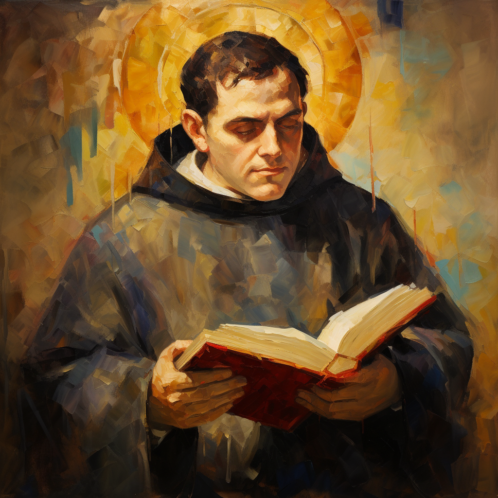

Thomas Aquinas, born in 1225 in Roccasecca, Italy, is regarded as one of the most significant Christian theologians and philosophers of the Middle Ages. His philosophical and theological works represent the pinnacle of scholastic thought. His most famous work is the "Summa Theologica." Aquinas focused on integrating Aristotelian philosophy with Christian doctrine.
Aquinas was sent to the Benedictine abbey of Monte Cassino at a young age. After beginning his education there, he continued at the University of Naples. There, he encountered the works of Aristotle and joined the Dominican Order. He became a student of the famous philosopher Albertus Magnus in Paris and Cologne.
Aquinas authored numerous theological and philosophical works. The "Summa Contra Gentiles" and "Summa Theologica" are his most renowned works. In these writings, he provided comprehensive analyses on the existence of God, morality, and Christian doctrine. Additionally, Aquinas' "Five Ways" of proving the existence of God hold a significant place in Western philosophy.